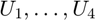
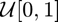

Late for a Date
This example demonstrates the confidence intervals for probabilities and quantiles assuming that you must take different modes of transportation to get to your date.
You leave your office and walk to the parking lot. You then drive to Chinatown, park your car, and walk to MingHin restaurant to meet your friends. For illustration purposes, we assume that the times of each segment are distributed uniformly:
\begin{align*} T_1 &= \text{ time to walk to your car } \sim \mathcal{U}[4,7], \\ T_2 &= \text{ time to drive to Chinatown } \sim \mathcal{U}[10,15], \\ T_3 &= \text{ time to park your car } \sim \mathcal{U}[0,12], \\ T_4 &= \text{ time to walk to Ming Hin } \sim \mathcal{U}[2,8], \\ T_{\text{total}} &= \text{ total travel time } = T_1 + T_2 + T_3 + T_4. \end{align*}
All times are given in minutes. We want to know
- what is the average time required to get to your date,
- what is the probability of needing more than \(35\) minutes to get to your date, and
- what is the time you need to leave by to guarantee with \(98\%\) confidence that you will be on time.
Contents
function LateDateBinomialQuantileCI %make it a function to not overwrite other variables
gail.InitializeDisplay %initialize the display parameters
Undefined variable "gail" or class "gail.InitializeDisplay". Error in LateDateBinomialQuantileCI (line 30) gail.InitializeDisplay %initialize the display parameters
Simulating travel times
First we construct a function that generates IID travel times. If  are IID  random variables, then
\begin{align*} T_1 &= 4 + 3 U_1, \\ T_2 &= 10 + 5 U_2, \\ T_3 &= 12 U_3, \\ T_4 &= 2 + 6 U_4, \\ T_{\text{total}} & = T_1 + T_2 + T_3 + T_4 = 16 + 3U_1 + 5U_2 + 12U_3 + 6 U_4. \end{align*}
Ttot = @(n) 16 + sum(bsxfun(@times,rand(n,4),[3 5 12 6]),2);
The average travel time
The average travel time can be easily calculated analytically:
\[ \mu = \mathbb{E}(T_{\text{total}}) = 16 + (3 + 5 + 12 + 6) \mathbb{E}(U) = 16 + 26 \times 1/2 = 29. \]
Monte Carlo methods can be used to approximate this as well:
tic
muhat = meanMC_g(Ttot,0.01,0) %IID Monte Carlo with absolute error of 0.01
toc
The probability of being late
If we only leave our office \(29\) minutes before our date, we will sometimes be early and sometimes be late.
n = 1e4; %number of samples lateTime = 29; %what time is considered late Ttotval = Ttot(n); %sample of n total times lateDateBinCI = binomialCI(n,sum(Ttotval > lateTime)) %confidence interval for being too late % Since this is an important date we plan to leave \(35\) minutes % beforehand and hope to be early or on time. What is the chance that we % will be late? % % We now perform \(n\) trials, and count the number of late dates. Then we % use |binomialCI| to compute a confidence interval on the probability of % being late for the date given that you leave \(35\) minutes beforehand. n = 1e4; %number of samples lateTime = 35; %what time is considered late Ttotval = Ttot(n); %sample of n total times lateDateBinCI = binomialCI(n,sum(Ttotval > lateTime)) %confidence interval for being too late
The chance is of being late is around \(8\%\).
The cut-off time for being on time with a high probability
A related problem is determining how late we can leave our office and still get to the restaurant on time with a high probability, say, \(98\%\). Now we use quantileCI as follows:
p = 0.02; %the probability of lateness that can be tolerated extremeVal = [16 42]; %the extreme values of the distribution lateDateQuantCI = quantileCI(1-p,Ttotval,extremeVal) %1-p quantile for total travel times
The worst \(2\%\) travel time is around \(36.7\) to \(38\) minutes. You need to allow \(38\) minutes to make sure that you will be on time with at least a \(98\%\) probability.
Author: Fred J. Hickernell